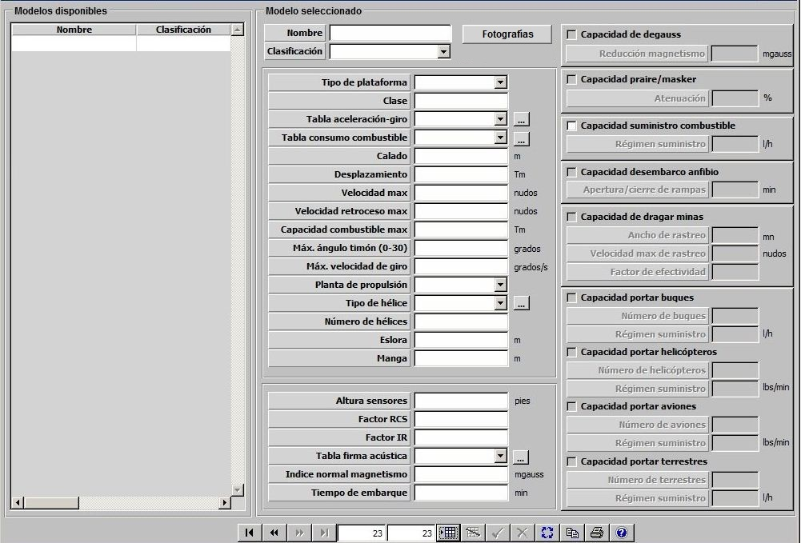
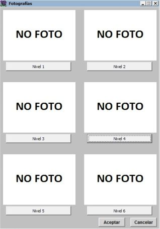

Plataformas Superficie

Descripción de los parámetros:
Fotografías: Pulsando este botón se accede a la ventana de Fotografías desde la que se pueden incluir varias fotografías de una plataforma, asociadas a distintos niveles de reconocimiento. Durante la ejecución del ejercicio, cuando se sitúe el Hook en una detección, dependiendo del nivel de reconocimiento de la misma se mostrará una de estas fotografías.
Para las plataformas de superficie se consideran 4 niveles de reconocimiento por lo que se podrán incluir hasta 4 fotografías.

En esta ventana pulsando en los botones Nivel 1 (2,3 ó 4) se accede al navegador desde el que se puede buscar y cargar una imagen.
Los botones Nivel 5 y Nivel 6 no están accesibles para las plataformas de superficie.
Pulsando el botón Aceptar se cierra la ventana y se guardan en memoria todas las imágenes cargadas hasta que finalmente se acepten o rechacen los datos de la plataforma en edición.
Tipo de Plataforma: Puede tomar los siguientes valores:
|
|
|
|
Este parámetro determina la clasificación de los contactos correspondientes a esta plataforma obtenidos por los sensores de otras unidades.
Clase: Campo alfanumérico de hasta 30 caracteres que describe la clase de la plataforma.
Tabla de Aceleración y Giro: Ver apartado Aceleración y Giro de Superficie y Submarinos.
Tabla de Consumo de Combustible: Ver apartado Consumo de Combustible de Superficies y Submarinos.
Calado: Este parámetro es tenido en cuenta por el modelo de colisiones.
Unidades: metros
Rango: 0 – 99,99
Desplazamiento: Este parámetro es tenido en cuenta por los modelos de sensores para calcular la distancia a la que esta plataforma es detectada y por el modelo de daños para calcular los daños producidos a esta plataforma debido a impactos de las distintas armas. También influye en la probabilidad de impacto sobre esta plataforma de minas y cañones.
Unidades: toneladas
Rango: 0,1 – 999999,9
Velocidad Máxima: Este parámetro es tenido en cuenta por el modelo de dinámica como límite de velocidad para la plataforma cuando navega avante toda.
Unidades: nudos
Rango: 0 – 100
Velocidad de Retroceso Máxima: Este parámetro es tenido en cuenta por el modelo de dinámica como límite de velocidad para la plataforma cuando navega marcha atrás.
Unidades: nudos
Rango: 0 – 100
Capacidad de Combustible Máxima: Este parámetro es tenido en cuenta por el modelo de dinámica en la simulación de consumos y recargas de combustibles. El tanto por ciento de combustible inicial de una unidad se calcula sobre este valor.
Unidades: toneladas
Rango: 0 – 9999,9
Máximo ángulo de Timón: Este parámetro es tenido en cuenta por el modelo de dinámica como límite de timón para la plataforma.
Unidades: grados
Rango: 0 – 30,00
Máxima Velocidad de Giro: Este parámetro es tenido en cuenta por el modelo de dinámica como límite de velocidad de giro para la plataforma.
Unidades: grados / segundo
Rango: 0 – 100
Planta Propulsión: Puede tomar los siguientes valores:
Este parámetro es tenido en cuenta por el modelo de Infrarrojo para determinar si detecta a la unidad.
Tipo de Hélice: Ver apartado Hélices.
Número de Hélices: Este parámetro es tenido en cuenta por el modelo de sonar pasivo.
Unidades: ---
Rango: 0 – 9
Eslora: Este parámetro es tenido en cuenta por el modelo de visual para calcular la distancia a la que esta plataforma es detectada.
Unidades: metros
Rango: 1 – 999
Manga: Este parámetro es tenido en cuenta por el modelo de visual para calcular la distancia a la que esta plataforma es detectada.
Unidades: metros
Rango: 1 – 99
Altura Sensores: Altura de instalación de los sensores en la plataforma. Este parámetro influye en los modelos de sensores, tanto para determinar el alcance de los sensores propios como para determinar el alcance al que es detectada esta plataforma por sensores de otras unidades.
Unidades: pies
Rango: 1 – 999,9
Factor RCS: Factor que modela la variación de RCS con el "Aspecto" (dado por el ángulo alfa = rumbo del contacto - marcación del contacto) de la unidad.
Unidades: Tanto por uno
Rango: 0,0 – 1,0
Ejemplo:
Si Factor RCS = 0 ⇒ RCS = RCS · seno (alfa).
Si Factor RCS = 0,25 ⇒ RCS = RCS ( 0,25 + 0,75 · seno (alfa) ).
Si Factor RCS = 1 ⇒ RCS no cambia con Aspecto.
Factor IR: Factor que modela la variación de Tamaño IR con el "Aspecto" (dado por el ángulo alfa = rumbo del contacto - marcación del contacto) de la unidad.
Unidades: Tanto por uno
Rango: 0,0 – 1,0
Ejemplo:
Si Factor IR = 0 ⇒ Tamaño IR = Tamaño IR · seno (alfa).
Si Factor IR = 0,25 ⇒ Tamaño IR = Tamaño IR ( 0,25 + 0,75 · seno (alfa) ).
Si Factor IR = 1 ⇒ Tamaño IR no cambia con Aspecto.
Tabla de Firma Acústica: Ver apartado Firma Acústica de Superficies.
Índice Normal de Magnetismo: Este parámetro determina el valor del campo magnético a menos de 15 metros, expresado en mgauss. Es tenido en cuenta por el modelo de zonas minadas para determinar si se producen daños en la plataforma cuando ésta se encuentra dentro de dicha zona.
Unidades: mgauss
Rango: 0 – 2000
Tiempo de embarque: Este parámetro indica el tiempo requerido para embarcar y desembarcar unidades.
Unidades: minutos
Rango: 1 – 99
Capacidad Degauss: Determina si la plataforma tiene capacidad de hacer Degauss.
Reducción del Magnetismo: Valor de Índice Normal de Magnetismo cuando la plataforma está haciendo degauss. Este parámetro sólo puede ser introducido si se ha seleccionado Capacidad Degauss.
Unidades: mgauss
Rango: 0 – 2000
Capacidad Praire/Masker: Determina si la plataforma tiene capacidad de hacer Praire/Masker.
Atenuación por Praire/Masker: Este parámetro reduce en el tanto por ciento indicado el exceso de señal de la plataforma en Banda Ancha y en Banda Estrecha. Influye por tanto en la detectabilidad de esta plataforma por sonar. Este parámetro sólo puede ser introducido si se ha seleccionado Capacidad Praire/Masker.
Unidades: %
Rango: 0 – 100
Capacidad de Suministro de Combustible: Determina si la plataforma tiene capacidad de suministrar combustible a otras plataformas de superficie.
Régimen de Suministro: Régimen con el que esta plataforma puede suministrar combustible a otras plataformas de superficie. Este parámetro sólo puede ser introducido si se ha seleccionado Capacidad de Suministro de Combustible.
Unidades: Litros / Hora
Rango: 0 – 999999,9
Capacidad Desembarco Anfibio: Determina si la plataforma tiene capacidad de llevar a cabo desembarcos anfibios.
Apertura/Cierre de Rampas: Tiempo de apertura y cierre de rampas para realizar un desembarco anfibio. Este parámetro sólo puede ser introducido si se ha seleccionado Capacidad Desembarco Anfibio.
Unidades: Minutos
Rango: 0 – 99
Capacidad de Neutralizar Minas: Determina si la plataforma tiene capacidad de neutralizar minas, tanto acústicas como magnéticas.
Ancho de Rastreo: Este parámetro es tenido en cuenta para calcular la velocidad con que disminuye la densidad de minas de una zona minada cuando esta plataforma se encuentra en ella neutralizando minas. Este parámetro sólo puede ser introducido si se ha seleccionado Capacidad de Neutralizar Minas.
Unidades: Millas Náuticas
Rango: 0 – 99,9
Velocidad Máx. de Rastreo: Velocidad máxima de la plataforma para que pueda neutralizar minas. Este parámetro sólo puede ser introducido si se ha seleccionado Capacidad de Neutralizar Minas.
Unidades: Nudos
Rango: 0 – 99,9
Factor de Efectividad: Factor que regula la efectividad de la unidad neutralizando minas. Este parámetro sólo puede ser introducido si se ha seleccionado Capacidad de Neutralizar Minas.
Unidades: %
Rango: 0 – 99,9
Ejemplo:
Si Factor de Efectividad = 0 ⇒ no neutraliza minas.
Si Factor de Efectividad = 99.9 ⇒ máxima efectividad.
Si es Cazaminas este factor debe ser mayor que si es Dragaminas.
Capacidad de Portar Buques: Determina si la plataforma tiene capacidad de transportar y actuar como base para unidades de superficie.
Número de Buques: Cantidad de unidades de superficie que puede portar esta plataforma. Este parámetro sólo puede ser introducido si se ha seleccionado Capacidad de Portar Buques.
Unidades: ---
Rango: 0 – 999
Régimen de Suministro: Régimen con el que esta plataforma suministra combustible a las unidades de superficie que transporta. Este parámetro sólo puede ser introducido si se ha seleccionado Capacidad de Portar Buques.
Unidades: Litros / hora
Rango: 0 – 999999,9
Capacidad de Portar Helicópteros: Determina si la plataforma tiene capacidad de transportar y actuar como base para helicópteros.
Número de Helicópteros: Cantidad de helicópteros que puede portar esta plataforma. Este parámetro sólo puede ser introducido si se ha seleccionado Capacidad de Portar Helicópteros.
Unidades: ---
Rango: 0 – 999
Régimen de Suministro: Régimen con el que esta plataforma suministra combustible a los helicópteros que transporta. Este parámetro sólo puede ser introducido si se ha seleccionado Capacidad de Portar Helicópteros.
Unidades: Libras / minuto
Rango: 0 – 999999,9
Capacidad de Portar Aviones: Determina si la plataforma tiene capacidad de transportar y actuar como base para aviones.
Número de Aviones: Cantidad de aviones que puede portar esta plataforma. Este parámetro sólo puede ser introducido si se ha seleccionado Capacidad de Portar Aviones.
Unidades: ---
Rango: 0 – 999
Régimen de Suministro: Régimen con el que esta plataforma suministra combustible a los aviones que transporta. Este parámetro sólo puede ser introducido si se ha seleccionado Capacidad de Portar Aviones.
Unidades: Libras / minuto
Rango: 0 – 999999,9
Capacidad de Portar Terrestres: Determina si la plataforma tiene capacidad de transportar y actuar como base para unidades terrestres.
Número de Terrestres: Cantidad de unidades terrestres que puede portar esta plataforma. Este parámetro sólo puede ser introducido si se ha seleccionado Capacidad de Portar Terrestres.
Unidades: ---
Rango: 0 – 999
Régimen de Suministro: Régimen con el que esta plataforma suministra combustible a las unidades terrestres que transporta. Este parámetro sólo puede ser introducido si se ha seleccionado Capacidad de Portar Terrestres.
Unidades: Litros / hora
Rango: 0 – 999999,9